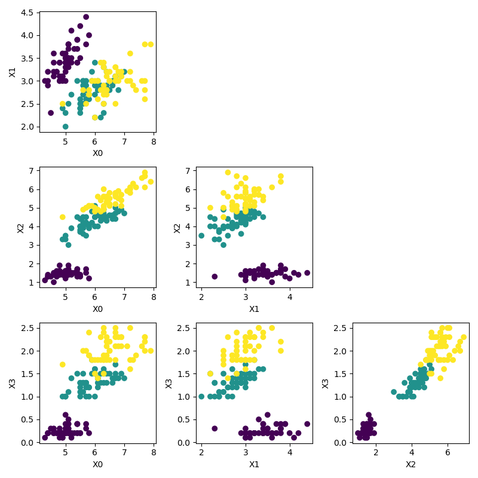

2. Visualization: Exercise
Contents
2. Visualization: Exercise#
Name:
Date:
(Please submit this .ipynb file with your name and its PDF copy.)
import numpy as np
import matplotlib.pyplot as plt
%matplotlib inline
1) Plotting curves#
a) Draw a spiral.
b) Draw a “\(\infty\)” shape.
c) Draw a “flower-like” shape.
2) Scatter plots#
Let us take the famous iris data set.
First four columns are:
SepalLength, SepalWidth, PetalLength, PetalWidth
The last column is the flower type:
1:Setosa, 2:Versicolor, 3:Virginica
!head data/iris.txt
5.1,3.5,1.4,0.2,1
4.9,3.0,1.4,0.2,1
4.7,3.2,1.3,0.2,1
4.6,3.1,1.5,0.2,1
5.0,3.6,1.4,0.2,1
5.4,3.9,1.7,0.4,1
4.6,3.4,1.4,0.3,1
5.0,3.4,1.5,0.2,1
4.4,2.9,1.4,0.2,1
4.9,3.1,1.5,0.1,1
First, we’ll read the data set from a text file.
X = np.loadtxt('data/iris.txt', delimiter=',')
print(X.shape, X)
(150, 5) [[5.1 3.5 1.4 0.2 1. ]
[4.9 3. 1.4 0.2 1. ]
[4.7 3.2 1.3 0.2 1. ]
[4.6 3.1 1.5 0.2 1. ]
[5. 3.6 1.4 0.2 1. ]
[5.4 3.9 1.7 0.4 1. ]
[4.6 3.4 1.4 0.3 1. ]
[5. 3.4 1.5 0.2 1. ]
[4.4 2.9 1.4 0.2 1. ]
[4.9 3.1 1.5 0.1 1. ]
[5.4 3.7 1.5 0.2 1. ]
[4.8 3.4 1.6 0.2 1. ]
[4.8 3. 1.4 0.1 1. ]
[4.3 3. 1.1 0.1 1. ]
[5.8 4. 1.2 0.2 1. ]
[5.7 4.4 1.5 0.4 1. ]
[5.4 3.9 1.3 0.4 1. ]
[5.1 3.5 1.4 0.3 1. ]
[5.7 3.8 1.7 0.3 1. ]
[5.1 3.8 1.5 0.3 1. ]
[5.4 3.4 1.7 0.2 1. ]
[5.1 3.7 1.5 0.4 1. ]
[4.6 3.6 1. 0.2 1. ]
[5.1 3.3 1.7 0.5 1. ]
[4.8 3.4 1.9 0.2 1. ]
[5. 3. 1.6 0.2 1. ]
[5. 3.4 1.6 0.4 1. ]
[5.2 3.5 1.5 0.2 1. ]
[5.2 3.4 1.4 0.2 1. ]
[4.7 3.2 1.6 0.2 1. ]
[4.8 3.1 1.6 0.2 1. ]
[5.4 3.4 1.5 0.4 1. ]
[5.2 4.1 1.5 0.1 1. ]
[5.5 4.2 1.4 0.2 1. ]
[4.9 3.1 1.5 0.1 1. ]
[5. 3.2 1.2 0.2 1. ]
[5.5 3.5 1.3 0.2 1. ]
[4.9 3.1 1.5 0.1 1. ]
[4.4 3. 1.3 0.2 1. ]
[5.1 3.4 1.5 0.2 1. ]
[5. 3.5 1.3 0.3 1. ]
[4.5 2.3 1.3 0.3 1. ]
[4.4 3.2 1.3 0.2 1. ]
[5. 3.5 1.6 0.6 1. ]
[5.1 3.8 1.9 0.4 1. ]
[4.8 3. 1.4 0.3 1. ]
[5.1 3.8 1.6 0.2 1. ]
[4.6 3.2 1.4 0.2 1. ]
[5.3 3.7 1.5 0.2 1. ]
[5. 3.3 1.4 0.2 1. ]
[7. 3.2 4.7 1.4 2. ]
[6.4 3.2 4.5 1.5 2. ]
[6.9 3.1 4.9 1.5 2. ]
[5.5 2.3 4. 1.3 2. ]
[6.5 2.8 4.6 1.5 2. ]
[5.7 2.8 4.5 1.3 2. ]
[6.3 3.3 4.7 1.6 2. ]
[4.9 2.4 3.3 1. 2. ]
[6.6 2.9 4.6 1.3 2. ]
[5.2 2.7 3.9 1.4 2. ]
[5. 2. 3.5 1. 2. ]
[5.9 3. 4.2 1.5 2. ]
[6. 2.2 4. 1. 2. ]
[6.1 2.9 4.7 1.4 2. ]
[5.6 2.9 3.6 1.3 2. ]
[6.7 3.1 4.4 1.4 2. ]
[5.6 3. 4.5 1.5 2. ]
[5.8 2.7 4.1 1. 2. ]
[6.2 2.2 4.5 1.5 2. ]
[5.6 2.5 3.9 1.1 2. ]
[5.9 3.2 4.8 1.8 2. ]
[6.1 2.8 4. 1.3 2. ]
[6.3 2.5 4.9 1.5 2. ]
[6.1 2.8 4.7 1.2 2. ]
[6.4 2.9 4.3 1.3 2. ]
[6.6 3. 4.4 1.4 2. ]
[6.8 2.8 4.8 1.4 2. ]
[6.7 3. 5. 1.7 2. ]
[6. 2.9 4.5 1.5 2. ]
[5.7 2.6 3.5 1. 2. ]
[5.5 2.4 3.8 1.1 2. ]
[5.5 2.4 3.7 1. 2. ]
[5.8 2.7 3.9 1.2 2. ]
[6. 2.7 5.1 1.6 2. ]
[5.4 3. 4.5 1.5 2. ]
[6. 3.4 4.5 1.6 2. ]
[6.7 3.1 4.7 1.5 2. ]
[6.3 2.3 4.4 1.3 2. ]
[5.6 3. 4.1 1.3 2. ]
[5.5 2.5 4. 1.3 2. ]
[5.5 2.6 4.4 1.2 2. ]
[6.1 3. 4.6 1.4 2. ]
[5.8 2.6 4. 1.2 2. ]
[5. 2.3 3.3 1. 2. ]
[5.6 2.7 4.2 1.3 2. ]
[5.7 3. 4.2 1.2 2. ]
[5.7 2.9 4.2 1.3 2. ]
[6.2 2.9 4.3 1.3 2. ]
[5.1 2.5 3. 1.1 2. ]
[5.7 2.8 4.1 1.3 2. ]
[6.3 3.3 6. 2.5 3. ]
[5.8 2.7 5.1 1.9 3. ]
[7.1 3. 5.9 2.1 3. ]
[6.3 2.9 5.6 1.8 3. ]
[6.5 3. 5.8 2.2 3. ]
[7.6 3. 6.6 2.1 3. ]
[4.9 2.5 4.5 1.7 3. ]
[7.3 2.9 6.3 1.8 3. ]
[6.7 2.5 5.8 1.8 3. ]
[7.2 3.6 6.1 2.5 3. ]
[6.5 3.2 5.1 2. 3. ]
[6.4 2.7 5.3 1.9 3. ]
[6.8 3. 5.5 2.1 3. ]
[5.7 2.5 5. 2. 3. ]
[5.8 2.8 5.1 2.4 3. ]
[6.4 3.2 5.3 2.3 3. ]
[6.5 3. 5.5 1.8 3. ]
[7.7 3.8 6.7 2.2 3. ]
[7.7 2.6 6.9 2.3 3. ]
[6. 2.2 5. 1.5 3. ]
[6.9 3.2 5.7 2.3 3. ]
[5.6 2.8 4.9 2. 3. ]
[7.7 2.8 6.7 2. 3. ]
[6.3 2.7 4.9 1.8 3. ]
[6.7 3.3 5.7 2.1 3. ]
[7.2 3.2 6. 1.8 3. ]
[6.2 2.8 4.8 1.8 3. ]
[6.1 3. 4.9 1.8 3. ]
[6.4 2.8 5.6 2.1 3. ]
[7.2 3. 5.8 1.6 3. ]
[7.4 2.8 6.1 1.9 3. ]
[7.9 3.8 6.4 2. 3. ]
[6.4 2.8 5.6 2.2 3. ]
[6.3 2.8 5.1 1.5 3. ]
[6.1 2.6 5.6 1.4 3. ]
[7.7 3. 6.1 2.3 3. ]
[6.3 3.4 5.6 2.4 3. ]
[6.4 3.1 5.5 1.8 3. ]
[6. 3. 4.8 1.8 3. ]
[6.9 3.1 5.4 2.1 3. ]
[6.7 3.1 5.6 2.4 3. ]
[6.9 3.1 5.1 2.3 3. ]
[5.8 2.7 5.1 1.9 3. ]
[6.8 3.2 5.9 2.3 3. ]
[6.7 3.3 5.7 2.5 3. ]
[6.7 3. 5.2 2.3 3. ]
[6.3 2.5 5. 1.9 3. ]
[6.5 3. 5.2 2. 3. ]
[6.2 3.4 5.4 2.3 3. ]
[5.9 3. 5.1 1.8 3. ]]
a) Make a scatter plot of the first two columns, with a distinct marker color for each flower type.
b) Create a matrix of pair-wise scatter plots like this:

You can use plt.tight_layout() to adjust the space between subplots.
c) Make a quiver plot, representing sepal data by position, petal data by arrows, and flower type by arrow color.
d) Make a 3D scatter plot of the sepal and petal data, with the 4th column represented by marker size.
3) Surface plots#
a) Draw a wavy surface (not just a sine curve extended in the 3rd dimension).
b) Draw the surface of a (half) cylinder.
Note that the mesh grid does not need to be square.
A half cylinder (0 <= theta <= pi), using a square mesh grid:
A full cylinder (0 <= theta < 2pi), using a cylindrical mesh grid:
c) Draw the surface of a sphere.